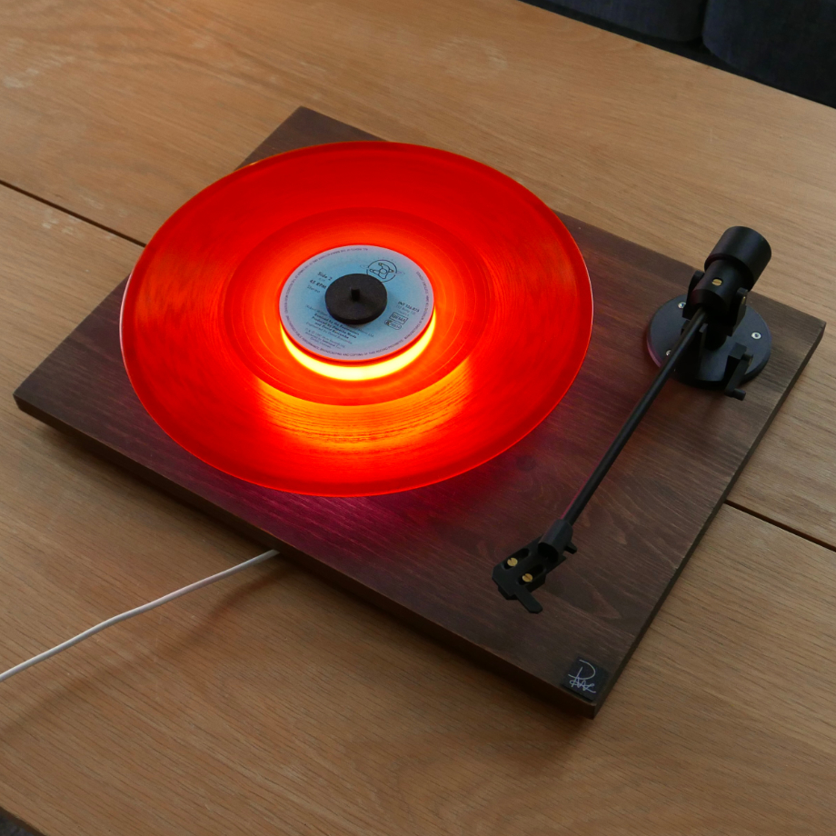
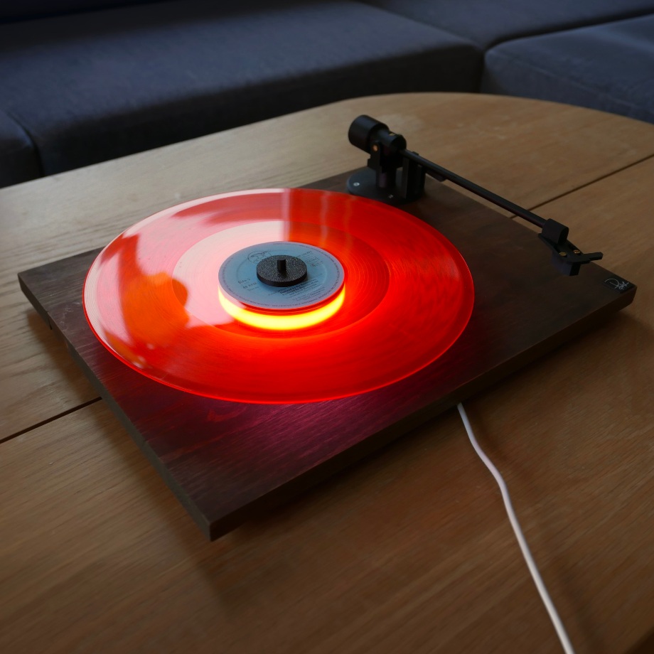
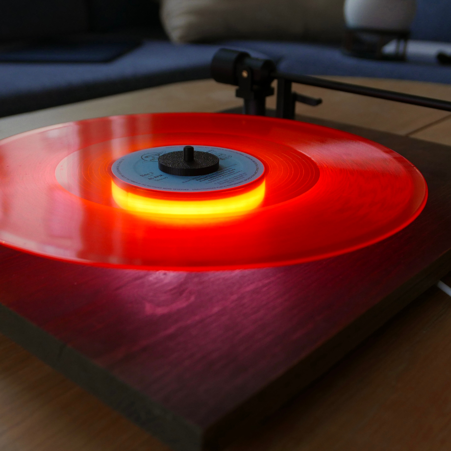
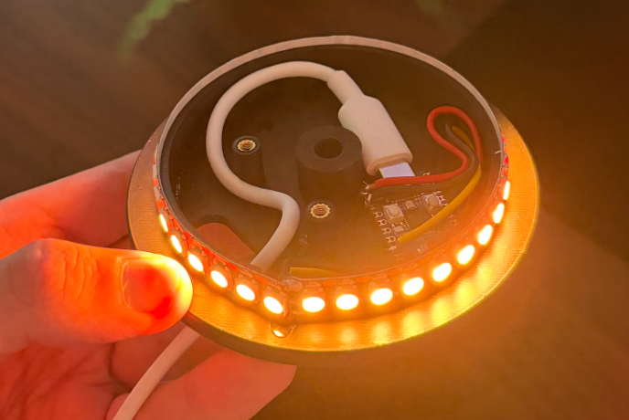
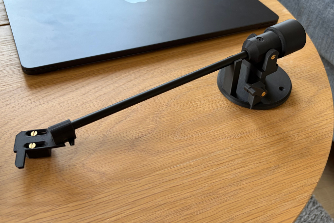
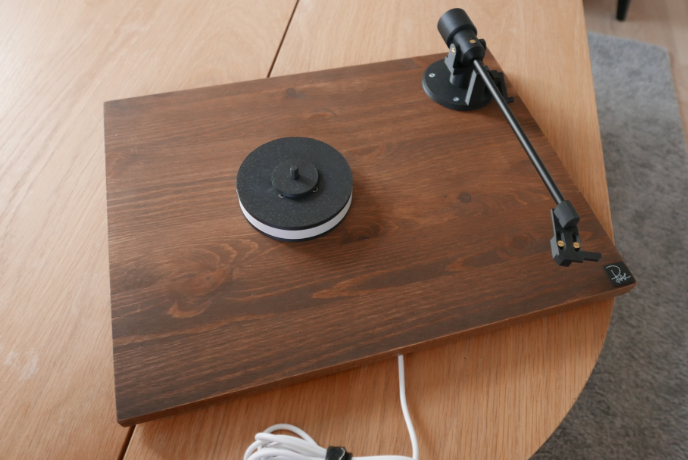

En kompis till mig kom med denna idén med att lysa upp hans vinylskiva
Tycker det va en jättebra idé
Tada!




Började med att designa ljusringen för att se om jag ens kunde få plats med lampor, diffusor, esp32 och sladd inne i den och efter lite meck så gick de exakt
Gjorde diffusorn i ett lager och de funkade bra, va lite orolig att de inte skulle bli tillräckligt ljust men de va inget problem alls

Vi letade väldigt länge efter att köpa en riktig tonarm från en skivspelare men de va antingen skitfula eller svindyra så jag gjorde ett litet försök att göra en med aluminiumrör, mässingsskruvar och 3d print
Det blev bättre än de fula som vi hade råd med så vi körde på detta

Allt sitter bara på en betsad furuskiva
Är ett hål i mitten för kabeln så den går på baksidan såklart och det är lite runda fötter med inbyggt väggfäste för den ska förmodligen sitta på väggen hos kompisen
Skivan sitter fast med hjälp av 4 starka magneter i den ringen som håller fast skivan